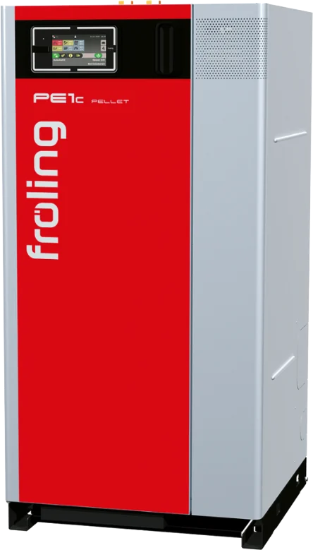

As Froling's authorised UK distributor since 2012, we hold the most comprehensive UK stock of genuine Froling spare parts. From ignition elements to lambda probes, grate bars to control boards — get your Froling boiler back online fast with parts that protect your warranty.
We stock spare parts for the complete Froling product range — from compact residential pellet boilers to large-scale commercial wood chip systems.
Froling's best-selling fully automatic pellet boiler range for residential and light commercial applications.
High-performance pellet systems for larger residential, agricultural, and commercial installations with advanced Lambda control.
Award-winning wood chip boiler — one of the most popular biomass systems in the UK. High efficiency, low emissions, robust construction.
Industrial wood chip systems for commercial and district heating, built for continuous operation and minimal downtime.
Froling log wood gasification boilers. High-temperature combustion delivers exceptional efficiency from dry logs.
Flexible dual-fuel systems for firewood and wood pellets. Parts cover both combustion systems within the SP Dual housing.
We also stock parts for older and discontinued Froling models. Contact our team on 0333 700 0275 with your serial number and we'll check availability immediately.
Know the type of part you need? Browse our most common Froling part categories. Not sure? Call us and we'll identify the exact component for you.
Ignition electrodes, coils, igniter fans, and start-up elements for all Froling models.
Lambda probes, oxygen sensors, and flue gas monitoring components for precise combustion.
Grate bars, stoker fingers, retort components, and ash pusher parts for Froling combustion chambers.
Door seals, combustion chamber gaskets, flue seals, and high-temperature ceramic rope.
PT100/PT1000 sensors, safety temperature limiters (STB), thermostats, and overheat protection.
Touchtronic and Lambda Touch control boards, display units, fuses, relays, and wiring components.
Primary and secondary air fans, draught fans, and fan motors for all Froling boiler systems.
Auger/screw conveyor parts, shear pins, hopper components, and fuel metering parts.
Turbulators, cleaning scrapers, baffles, and cleaning system components to maintain peak efficiency.
Can't find the part category you need?
Enquire About Any Froling Part →Provide your Froling boiler model, the part number or a description of the fault, and we'll confirm availability and pricing — usually within the hour.
Mon–Fri: 8:30am – 5:00pm
Have your Froling model name (e.g. PE1 Pellet 25), serial number (on the ID plate), and part number or fault description ready. A photo of the fault or part helps us get it right first time.
We supply the full Froling range from 7kW to 1,500kW, with full UK installation, commissioning, and ongoing service support.